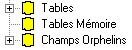

Un dictionnaire contient toujours trois fichiers spéciaux qui sont :
Tables
Tables mémoires
Champs orphelins

Tables
Tables contient la liste de toutes les tables contenues dans le dictionnaire. Cela permet par exemple de chercher une table sans se soucier des fichiers qui la contiennent.
Tables contient une table spéciale, la table Champs qui contient la liste de tous les champs contenus dans le dictionnaire.
Tables mémoires
Tables mémoires contient la liste de toutes les tables qui n'appartiennent à aucun fichier.
Ce sont des structures de travail qui servent de dialogue entre votre programme et les masques, ou entre votre programme et Harmony. L'enregistrement Harmony du dictionnaire ddsys.dhsd est un exemple typique de table mémoire.
Champs orphelins
Champs orphelins contient la liste de tous les champs qui ne sont plus utilisés.
Lorsque vous supprimez un champ d'une table T :
soit le champ est utilisé dans d'autres table et le champ est juste supprimé de la table T,
soit le champ n'est plus utilisé dans le dictionnaire. Dans ce cas, Xwin vous propose de supprimer ou de garder la définition du champ. Si vous choisissez de garder la définition du champ, le champ est placé dans la tables des Champs orphelins.
Voir également :